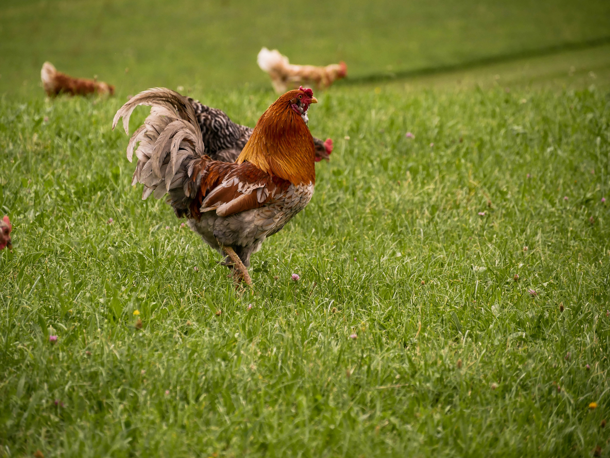
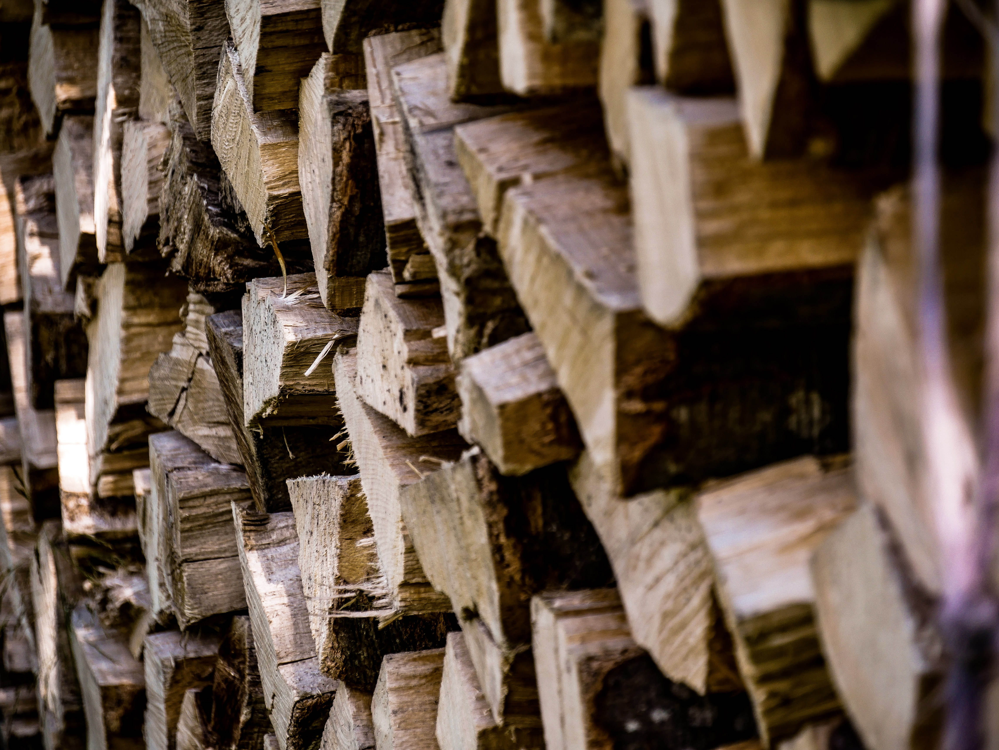
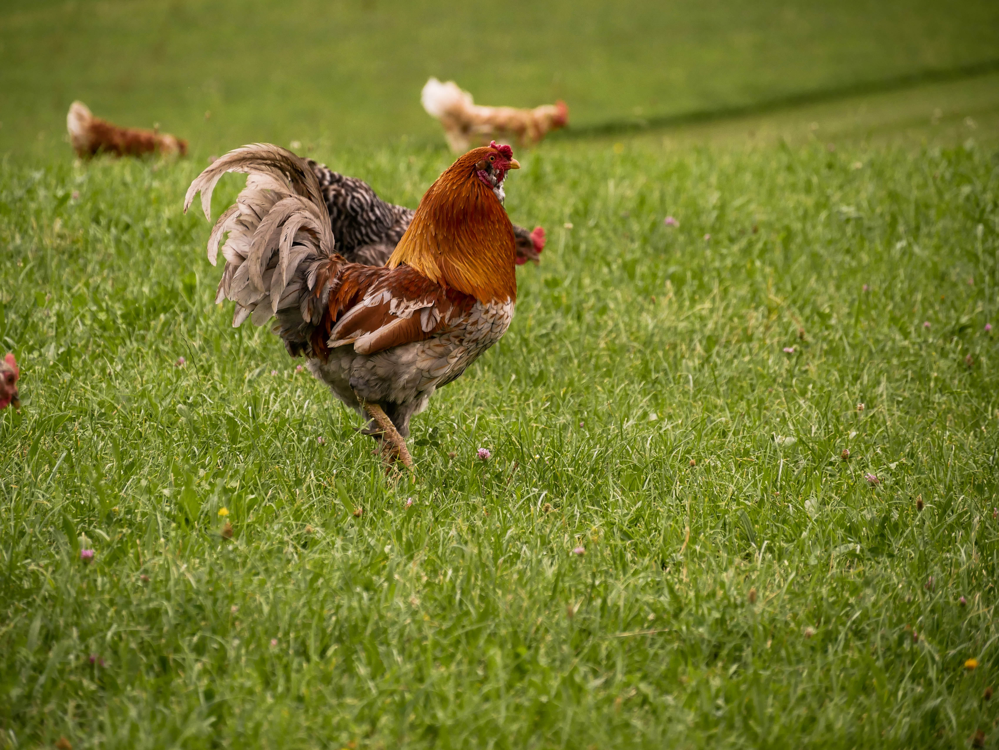
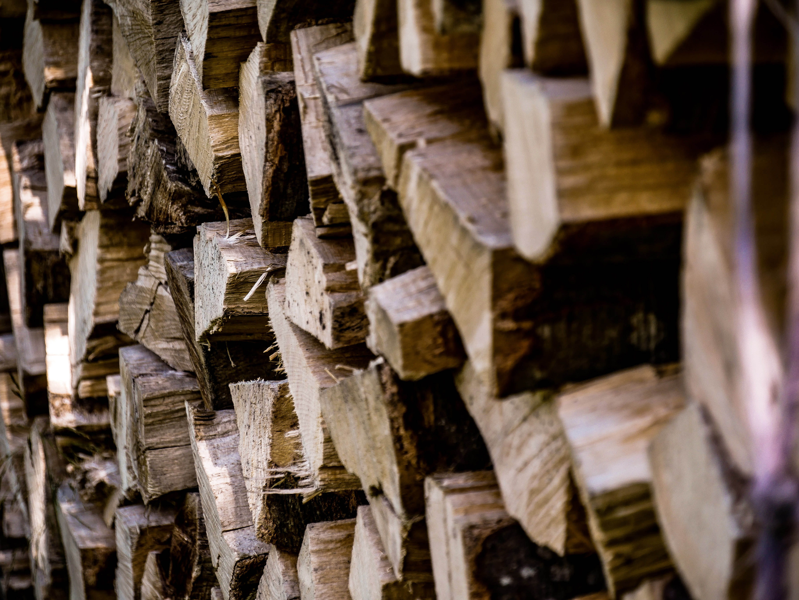
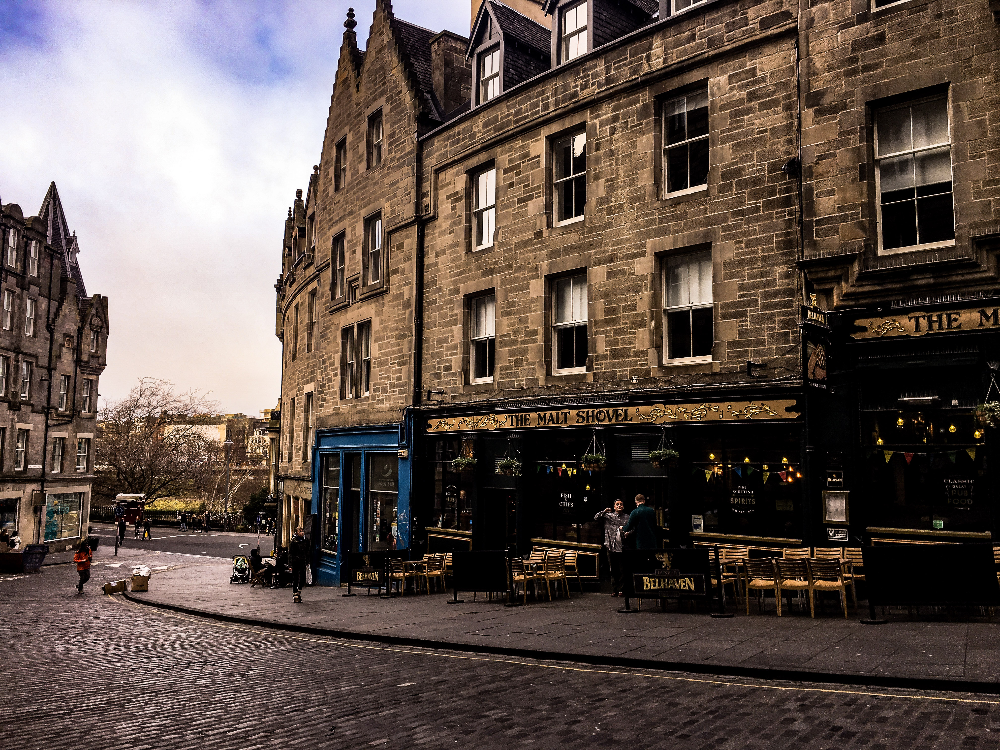
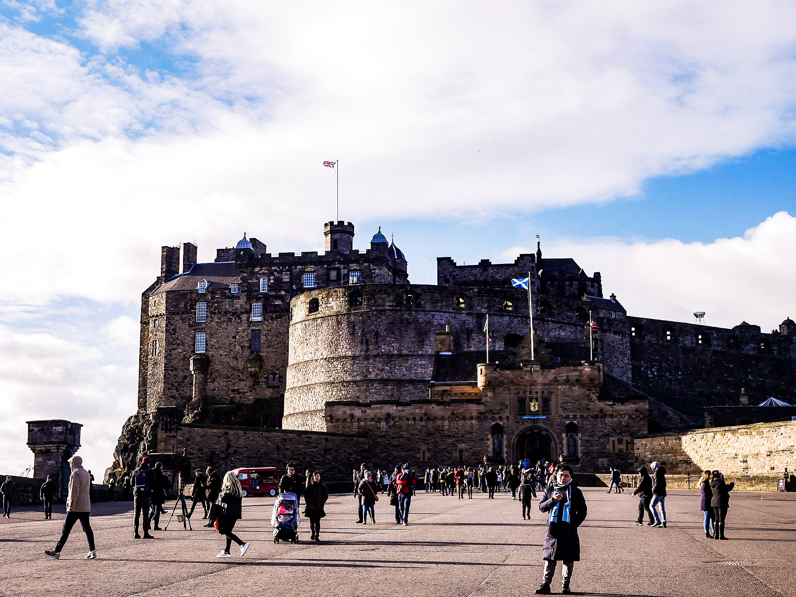
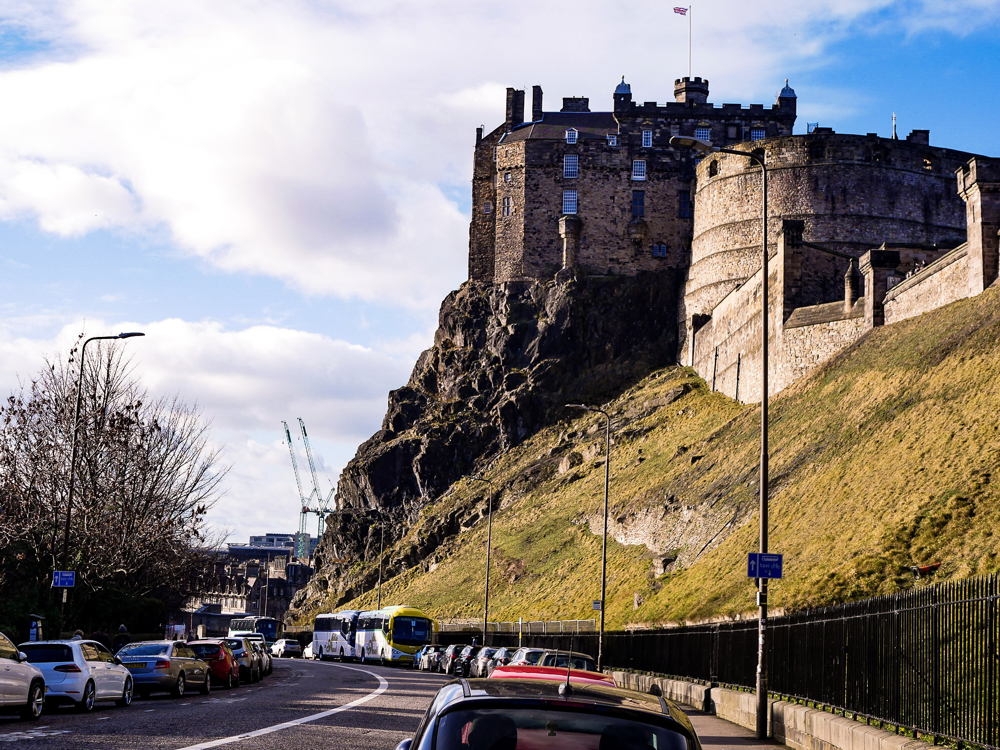

Nature
Krabi
Thailand N 8°6'40.195" E 99°6'35.027"


Fuschlsee
Austria N 47°47'33.691" E 13°17'58.074"
 



Lisbon
Portugal N 38°42'27.902" W 9°8'11.730"


Edinburgh
Scottland N 55°56'54.957" W 3°11'59.705"


